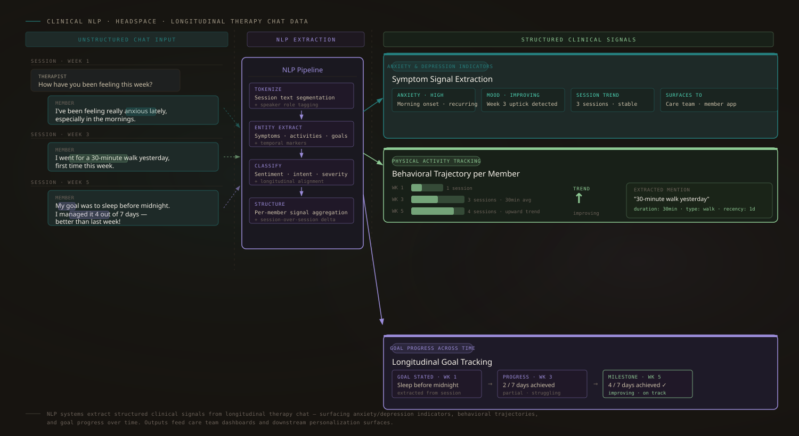

Goal Progress & Mental Health Indicators from Chat Data
What members and therapists say in chat tells you what's working, and what isn't.
NLP systems that extract structured signal from longitudinal therapy chat data. Turning unstructured language into clinical and behavioral indicators usable by care teams and downstream personalization surfaces.

Anxiety & Depression Indicators
Identifying symptom signals in therapy and psychiatry chat data, surfaced as structured indicators for clinical context and member-facing surfaces.
Physical Activity Tracking
Extracting activity mentions across chat history to build behavioral trajectories per member.
Goal Progress Across Time
Surfacing goals stated, milestones met, and goal evolution longitudinally across sessions.